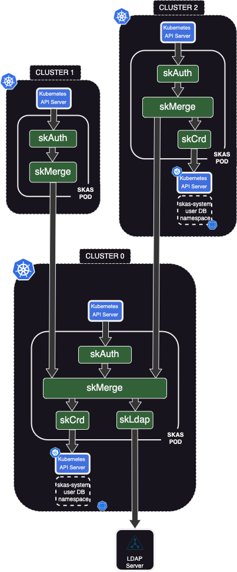

Cluster federation

Due to its modular concept and ability to configure links between modules, even across clusters, SKAS is very effective in a multi-cluster environment.
Here a sample configuration to illustrate this.
Cluster0is a kind of 'control' cluster. It act as a 'hub', providing users information in a centralized approach. It could be dedicated to this role, or hosting other 'meta' control function.Cluster1is a standard cluster, hosting usual workload. It fully rely oncluster0for users authentication.Cluster2is similar tocluster1, but is also able to manage some local users and/or groups.
Of course, this is just one example of what could be achieved with SKAS.
In the rich Kubernetes ecosystem, there is several solutions such as Submariner, Skupper, Cillium ClusterMesh, Liqo, .... aimed to extend the concept of k8s
servicesacross clusters. Although these can be used in our cases, the configuration described here rely on 'pure vanilla', independent Kubernetes clusters.

Cluster0 deployment.
Here are two samples of value file for cluster0. Without and with external LDAP server.
The LDAP server will help to illustrate the chaining of provider.
values.cluster0-noldap.yaml
clusterIssuer: your-cluster-issuer
skAuth:
exposure:
external:
ingress:
host: skas.ingress.cluster0
kubeconfig:
context:
name: skas@cluster0
cluster:
apiServerUrl: https://kubernetes.ingress.cluster0
skMerge:
exposure:
external:
enabled: true
services:
identity:
disabled: false
clients:
- id: cluster1
secret: cluster0Cluster1SharedSecret
- id: cluster2
secret: cluster0Cluster2SharedSecret
ingress:
enabled: true
host: skas-skmerge.ingress.cluster0
The first part include what was in a separate values.init.yaml file in other samples of this documentation.
As such, this file can be used for initial deployment, or for upgrading an exiting one.
Then, there is the part specific to this configuration. The identiy service of the
skMerge module is exposed externally. An authentication is required from the callers, which will be the two other clusters.
Also, this service must be accessed externally. So the ingress.enable: true and ingress.host, which must be adjusted to your context.
Of course, the
ingress.hostvalue must also be defined in your DNS.
Here is the values file including the LDAP external server:
values.cluster0-ldap.yaml
clusterIssuer: your-cluster-issuer
skAuth:
exposure:
external:
ingress:
host: skas.ingress.cluster0
kubeconfig:
context:
name: skas@cluster0
cluster:
apiServerUrl: https://kubernetes.ingress.cluster0
skLdap:
enabled: true
# --------------------------------- LDAP configuration
ldap:
host: ldap.mydomain.internal
insecureNoSSL: false
rootCaData: "LS0tLS1CRUdJTiBDRVJUSUZ................................lRJRklDQVRFLS0tLS0K"
bindDN: cn=Manager,dc=mydomain,dc=internal
bindPW: admin123
groupSearch:
baseDN: ou=Groups,dc=mydomain,dc=internal
filter: (objectClass=posixgroup)
linkGroupAttr: memberUid
linkUserAttr: uid
nameAttr: cn
timeoutSec: 10
userSearch:
baseDN: ou=Users,dc=mydomain,dc=internal
cnAttr: cn
emailAttr: mail
filter: (objectClass=inetOrgPerson)
loginAttr: uid
numericalIdAttr: uidNumber
skMerge:
providers:
- name: crd
- name: ldap
exposure:
external:
enabled: true
services:
identity:
disabled: false
clients:
- id: cluster1
secret: cluster0Cluster1SharedSecret
- id: cluster2
secret: cluster0Cluster2SharedSecret
ingress:
enabled: true
host: skas-skmerge.ingress.cluster0
Please, refer to LDAP Setup for how to configure this external LDAP server connection.
To apply the configuration of your choice, enter:
$ helm -n skas-system upgrade -i skas skas/skas --values ./values.cluster0-noldap.yaml --create-namespace
cluster0 with administrator privileges:
If this is the first deployment on this cluster, don't forget also to configure the API Server
For the configuration of the two other clusters, you will need the Certificate Authority of ingress on the skMerge
identity endpoint, encoded in base64. You can retrieve it with the following command:
Cluster1 deployment
Here is a sample of values file for cluster1 deployment:
values.cluster1.yaml
clusterIssuer: your-cluster-issuer
skAuth:
exposure:
external:
ingress:
host: skas.ingress.cluster1
kubeconfig:
context:
name: cluster1
cluster:
apiServerUrl: https://kubernetes.ingress.cluster1
skMerge:
providers:
- name: cluster0
providerInfo:
cluster0:
url: https://skas-skmerge.ingress.cluster0
rootCaData: "LS0tLS1CRUdJTiBDRV.............09Ci0tLS0tRU5EIENFUlRJRklDQVRFLS0tLS0K"
insecureSkipVerify: false
clientAuth:
id: cluster1
secret: cluster0Cluster1SharedSecret
skCrd:
enabled: false
Again, the first part include what was in a separate values.init.yaml file in other samples of this documentation.
As such, this file can be used for initial deployment, or for upgrading an exiting one.
Then:
- The
skMerge.providerslist contains only one provider:cluster0, defined just below it. - The
providerInfo.cluster0.urltarget the ingress we setup oncluster0to reach its identity service. - The
providerInfo.cluster0.rootCaDatais set to the base64 encoded Certificate Authority of ingress on theskMergeidentity endpoint. We retrieved this at the end of the previous paragraph. - The
providerInfo.cluster0.clientAuthprovide authentication information, as required bycluster0.
To apply this configuration, enter:
with a kubernetes config targetingcluster1 with administrator privileges:
If this is the first deployment on this cluster, don't forget also to configure the API Server
Testing
We can now configure our local Kubernetes config file to access to our clusters:
$ kubectl sk init https://skas.ingress.cluster0
Setup new context 'cluster0' in kubeconfig file '/Users/john/.kube/config'
$ kubectl sk init https://skas.ingress.cluster1
Setup new context 'cluster1' in kubeconfig file '/Users/john/.kube/config'
We can connect as admin on cluster0 and check what this user look like:
$ kubectl config use-context cluster0
Switched to context "cluster0".
$ kubectl sk login admin
Password:
logged successfully..
$ kubectl sk user describe admin --explain
USER STATUS UID GROUPS EMAILS COMMON NAMES AUTH
admin passwordUnchecked 0 admin,all,auditors,skas-admin admin@xxxx.com SKAS administrator,admin crd
Detail:
PROVIDER STATUS UID GROUPS EMAILS COMMON NAMES
crd passwordUnchecked 0 skas-admin SKAS administrator
ldap passwordUnchecked 2003 all,auditors,admin admin@xxxx.com admin
In this example, the user admin exists in our both provider (crd and ldap). Both values are merged to provide the user profile (Refer to Identity Providers chaining)
Now, we can make the same operation on cluster1:
$ kubectl config use-context cluster1
Switched to context "cluster1".
$ kubectl sk login admin
Password:
logged successfully..
$ kubectl sk user describe admin --explain
USER STATUS UID GROUPS EMAILS COMMON NAMES AUTH
admin passwordUnchecked 0 admin,all,auditors,skas-admin admin@xxxx.com SKAS administrator,admin cluster0
Detail:
PROVIDER STATUS UID GROUPS EMAILS COMMON NAMES
cluster0 passwordUnchecked 0 admin,all,auditors,skas-admin admin@xxxx.com SKAS administrator,admin
From the cluster1 point of view, we have only one provider: cluster0. We hide the information about how the admin profile was build.
If we want to expose this information, we can refactor this configuration by connecting
cluster1.skMergedirectly to thecluster0identity providers (crdandldap), a level belowskMerge.
Now, let's try to create a new user on cluster1:
$ kubectl config use-context cluster1
Switched to context "cluster1".
$ kubectl sk whoami
USER ID GROUPS
admin 0 admin,all,auditors,skas-admin
$ kubectl sk user create localuser1 --generatePassword
ERRO[0000] API server communication error error="users.userdb.skasproject.io \"localuser1\" is forbidden: User \"admin\" cannot get resource \"users\" in API group \"userdb.skasproject.io\" in the namespace \"skas-system\""
The operation fail, as the admin user have not rights to write the the skas-system namespace of the cluster1.
This is the intended behavior, as we want users definition to exists only in cluster0.
There is a case where this operation seems to work: If your admin user is also kubernetes administrator
(i.e member of system:masters), it will be able to write to the skas-system namespace, so the creation will be successful.
But, the users created this way will not be taken in account by the system, as there is no crd provider in cluster1. Same for GroupBindinds
$ kubectl config use-context cluster0
Switched to context "cluster0".
$ kubectl sk user bind admin system:masters
GroupBinding 'admin.system.masters' created in namespace 'skas-system'.
$ kubectl config use-context cluster1
Switched to context "cluster1".
$ kubectl sk login admin
Password:
logged successfully..
$ kubectl sk whoami
USER ID GROUPS
admin 0 admin,all,auditors,skas-admin,system:masters
$ kubectl sk user create localuser1 --generatePassword
The following password has been generated: 'KTeZrzYEgeHS'
(Save it as it will not be accessible anymore).
User 'localuser1' created in namespace 'skas-system'.
$ kubectl sk login localuser1 KTeZrzYEgeHS
Invalid login!
Cluster2 deployment
Here is a sample of values file for cluster2 deployment:
values.cluster1.yaml
clusterIssuer: cluster-issuer1
skAuth:
exposure:
external:
ingress:
host: skas.ingress.cluster2
kubeconfig:
context:
name: cluster2
cluster:
apiServerUrl: https://kubernetes.ingress.cluster2
# Members of these group will be allowed to perform 'kubectl_sk user describe'
# Also, they will be granted by RBAC to access token resources
adminGroups:
- skas-admin
- cluster2-skas-admin
skMerge:
providers:
- name: cluster0
- name: crd
providerInfo:
cluster0:
url: https://skas-skmerge.ingress.cluster0
rootCaData: "LS0tLS1CRUdJTiBDRVJUSUZJQ0FURS...........VNGelVDQT09Ci0tLS0tRU5EIENFUlRJRklDQVRFLS0tLS0K"
insecureSkipVerify: false
clientAuth:
id: cluster2
secret: cluster0Cluster2SharedSecret
skCrd:
enabled: true
initialUser:
login: cluster2-skas-admin
passwordHash: $2a$10$ijE4zPB2nf49KhVzVJRJE.GPYBiSgnsAHM04YkBluNaB3Vy8Cwv.G # admin
commonNames: ["Cluster2 SKAS administrator"]
groups:
- cluster2-skas-admin
# Members of theses groups will be granted RBAC access to users and groupBinding resources in the namespace above
adminGroups:
- cluster2-skas-admin
- skas-admin
Again, the first part include what was in a separate values.init.yaml file in other samples of this documentation.
As such, this file can be used for initial deployment, or for upgrading an exiting one.
Then:
skMerge.providersreference now our localcrdproviders aside the globalcluster0.skMerge.providerInfo.cluster0is the same as forcluster1, except of course theclientAuthpart.- An initial user (
cluster2-skas-system) is created as local admin. This account will only be valid on this cluster. - The list of
adminGroupsmust be defined twice:- One in the
skAuthmodule. This to allowkubectl_sk user describecommand for members of these groups. - One in the
skCrdmodule. This to setup RBAC rules to allow SKAS resources (skusers, groupBindings, tokens) to be managed by members of theses groups.
- One in the
To apply this configuration, enter:
with a kubernetes config targetingcluster2 with administrator privileges:
If this is the first deployment on this cluster, don't forget also to configure the API Server
Testing
Configure our local Kubernetes config file to access to this clusters:
$ kubectl sk init https://skas.ingress.cluster2
Setup new context 'cluster2' in kubeconfig file '/Users/john/.kube/config'
Now, we can log as local admin, and describe ourself:
$ kubectl sk login cluster2-skas-admin
Password:
logged successfully..
$ kubectl sk user describe cluster2-skas-admin --explain
USER STATUS UID GROUPS EMAILS COMMON NAMES AUTH
cluster2-skas-admin passwordUnchecked 0 cluster2-skas-admin Cluster2 SKAS administrator crd
Detail:
PROVIDER STATUS UID GROUPS EMAILS COMMON NAMES
cluster0 userNotFound 0
crd passwordUnchecked 0 cluster2-skas-admin Cluster2 SKAS administrator
Ensure we can perform all usual user management operations under this account:
$ kubectl -n skas-system get tokens
NAME CLIENT USER LOGIN AUTH. USER ID CREATION LAST HIT
tjvygwmtparktpwiiuysydzctbunppkycsykprtdswsramtm cluster2-skas-admin crd 0 2023-08-31T12:43:03Z 2023-08-31T12:43:26Z
$ kubectl sk user create cluster2user1 --generatePassword
The follwing password has been generated: '8fJoM6JFObjO'
(Save it as it will not be accessible anymore).
User 'cluster2user1' created in namespace 'skas-system'.
$ kubectl sk user bind cluster2user1 cluster2grp1
GroupBinding 'cluster2user1.cluster2grp1' created in namespace 'skas-system'.
$ kubectl sk user describe cluster2user1
USER STATUS UID GROUPS EMAILS COMMON NAMES AUTH
cluster2user1 passwordUnchecked 0 cluster2grp1 crd
$ kubectl sk user describe cluster2user1 --explain
USER STATUS UID GROUPS EMAILS COMMON NAMES AUTH
cluster2user1 passwordUnchecked 0 cluster2grp1 crd
Detail:
PROVIDER STATUS UID GROUPS EMAILS COMMON NAMES
cluster0 userNotFound 0
crd passwordUnchecked 0 cluster2grp1
And check the newly created user is effective:
$ kubectl sk login cluster2user1 8fJoM6JFObjO
logged successfully..
$ kubectl sk whoami
USER ID GROUPS
cluster2user1 0 cluster2grp1
$ kubectl get ns
Error from server (Forbidden): namespaces is forbidden: User "cluster2user1" cannot list resource "namespaces" in API group "" at the cluster scope
The same operations can be performed under the
adminaccount. This because it is member of theskas-admingroup and we choose to include this group in the twoadminGroupslist in thevalues.cluster2.yamlconfiguration file.